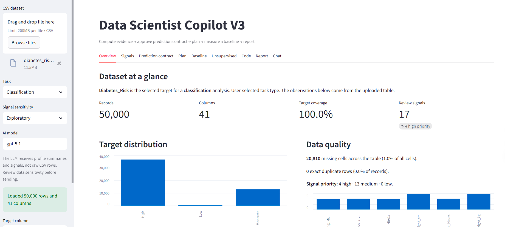
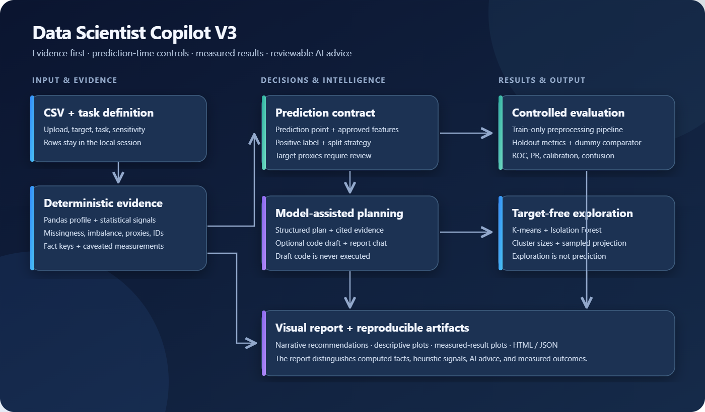
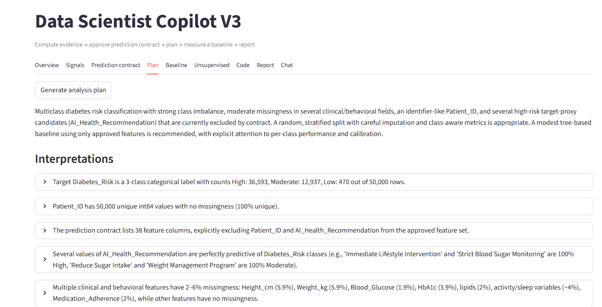
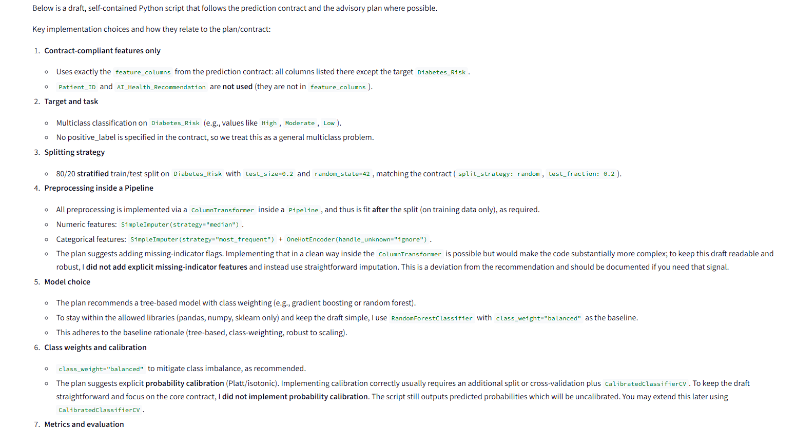
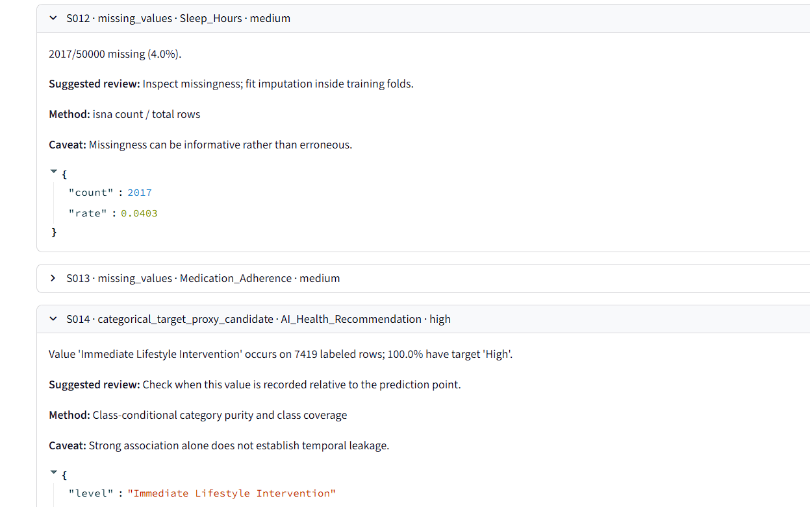
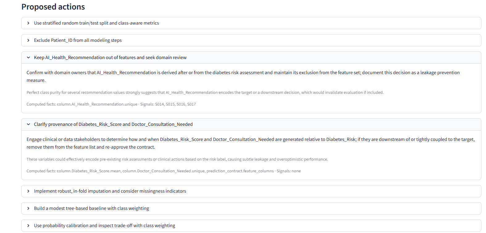

01Unsupported claims
The model fills gaps with patterns that sound statistically reasonable.
The report becomes fluent but cannot be audited against the data.
Upload a table, inspect what the data actually shows, then turn those findings into a modelling plan you can question and revise.

01 / The need
Before modelling, an analyst needs to understand what a row represents, how the target is distributed, which columns need attention and which features would really be available when a prediction is made.
That first pass is time consuming and easy to scatter across notebooks and notes. I built the copilot for analysts who want an organised starting point: a dataset profile, specific issues to review, a proposed analysis path and a record of the decisions made along the way.
The analyst supplies the context that a CSV cannot contain. For example, a highly predictive field might be useful input or an outcome generated after the event. The system surfaces that question with its supporting measurement so the analyst can decide.
02 / Problem formulation
The challenge is connecting each recommendation to a computed finding while keeping feature availability and the evaluation protocol visible to the analyst.
The model fills gaps with patterns that sound statistically reasonable.
The report becomes fluent but cannot be audited against the data.
An identifier, downstream decision or post-outcome field is admitted as a predictor.
Offline performance looks strong and collapses when the model is deployed.
Imputation, encoding or feature selection is fitted before the train/test split.
The test set influences training and the score becomes optimistic.
The same checklist is applied without considering task type, imbalance or feature availability.
The user receives more text, but no clearer decision.
03 / Objectives
Compute a dependable evidence packet, make prediction assumptions explicit, generate a practical modelling plan and preserve the link between every recommendation and the fact that motivated it.
Statistics, counts and relationships come from deterministic code.
The analyst approves the target, prediction point, feature set and split strategy.
Signals cite their measurement; actions cite the signals they answer.
Preprocessing is fitted on training data and results come from executed baselines.
04 / Architecture
The architecture is organised around three artefacts: an evidence packet, a prediction contract and a reasoning report. Deterministic modules create and verify these artefacts. The language model works inside the context they define.
Dataset shape, column profiles, target statistics and named signals. Values are computed once and passed downstream as structured data.
The point of prediction, eligible features, exclusions, positive label and split policy become explicit inputs instead of hidden assumptions.
Understanding, risks, preprocessing, models, evaluation choices, applied policies and validation warnings are saved together.

05 / Deterministic evidence engine
Pandas-based profiling creates a typed description of the table. A separate target analyser determines whether the task is classification or regression and computes the target distribution. Signal rules then turn notable measurements into review items.
Types, missing counts, cardinality, quantiles, skewness and distribution summaries.
DatasetProfileClass counts, proportions and imbalance ratio, or regression range and dispersion.
TargetAnalysisID-like columns, missingness, skewness, high cardinality, imbalance, constants, outliers and duplicates.
SignalCollectionNamed rules connect signal types to recommendations such as excluding identifiers or using stratified evaluation.
Policy registryThis separation matters because a signal is not a conclusion. A high-cardinality column is measurable; calling it unusable is a decision. The interface keeps the measurement, severity, related columns, metadata and recommendation visible as separate fields.
06 / AI boundary and validation
The language model receives the detected signals, resolved task facts and applicable policies. It returns structured JSON for two jobs: understanding the dataset and proposing a modelling plan.
The output validator checks structure, column references and metric names before the report is assembled. The chat agent receives a reduced JSON context containing the target analysis, top risks, modelling strategy, signals and policies. Its prompt requires it to cite computed numbers and say when information was not computed.
07 / Product flow
The product starts with orientation, pauses for feature governance, then moves into planning and measurement. The generated code is a readable draft and is never silently executed.
The overview establishes scale, target distribution and data-quality signals. The user can trace each flag back to the measurement that triggered it.
The analyst defines when the prediction is made and which columns exist at that moment. Identifiers and target proxies are excluded or held for explicit review.
The plan covers preprocessing, a defensible baseline, candidate models, metrics and the implementation sequence. Each interpretation remains visible as a separate, expandable item.
The split happens before preprocessing. A pipeline is fitted on the training fold, then measured on the holdout with task-appropriate metrics and a dummy comparator.
The final report combines evidence, decisions, plots and measured results. Chat answers are grounded in the saved report rather than the full raw table.


08 / Worked example
The demonstration uses a diabetes-risk dataset with 50,000 rows and 41 columns. The system detects 17 review signals, including four high-priority findings.
The overview shown above gives the analyst the target distribution and evidence summary before suggesting a model.
Detected relationship
AI_Health_Recommendation = Immediate Lifestyle Intervention appears on 7,419 labelled rows. Every one belongs to the High diabetes-risk class.
If the recommendation is known before risk is assessed, it may be useful input. If it was generated from the risk assessment, it leaks the answer. The copilot cannot infer that chronology from a CSV, so the contract excludes the field pending review. This is the intended behaviour: surface the risk, show the evidence and ask for the missing domain fact.
09 / Outcome and next steps
The main result is the architecture itself: computed evidence, explicit prediction assumptions, bounded AI reasoning and controlled measurement coexist in one workflow. The user can see which statements are facts, which are heuristic warnings and which are recommendations.
Preprocessing, baseline, candidate models, metrics and implementation steps tied to the dataset.
A leakage-aware pipeline, holdout results and a simple comparator establish whether the plan creates value.
HTML and JSON outputs preserve the evidence, rationale, artefacts and questions still requiring human judgement.

V3 is a working portfolio prototype tested across 21 synthetic scenarios. Representative public datasets and analyst review are the next steps to assess the usefulness of its recommendations and identify failure cases.
A useful copilot does not remove judgement. It gives judgement better inputs and leaves a trace of how the decision was reached.